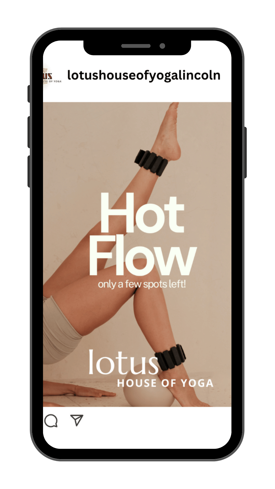
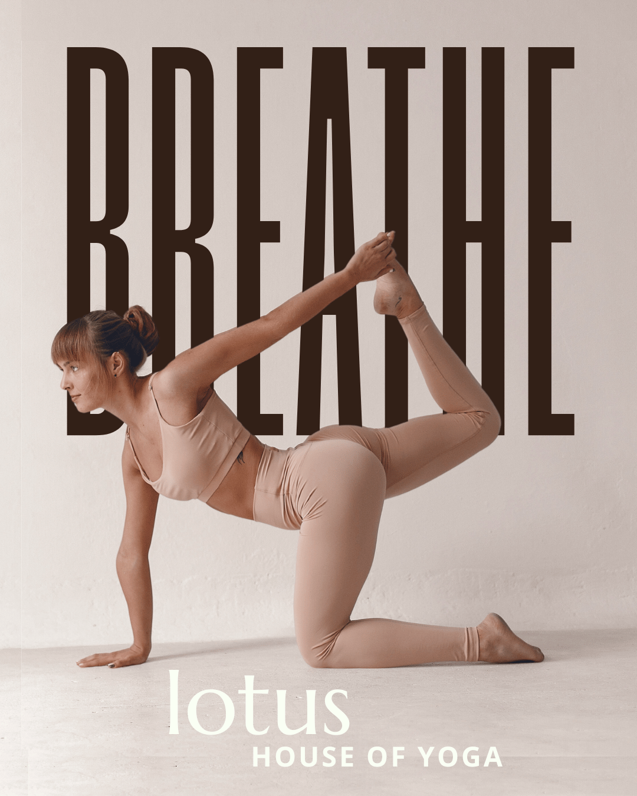
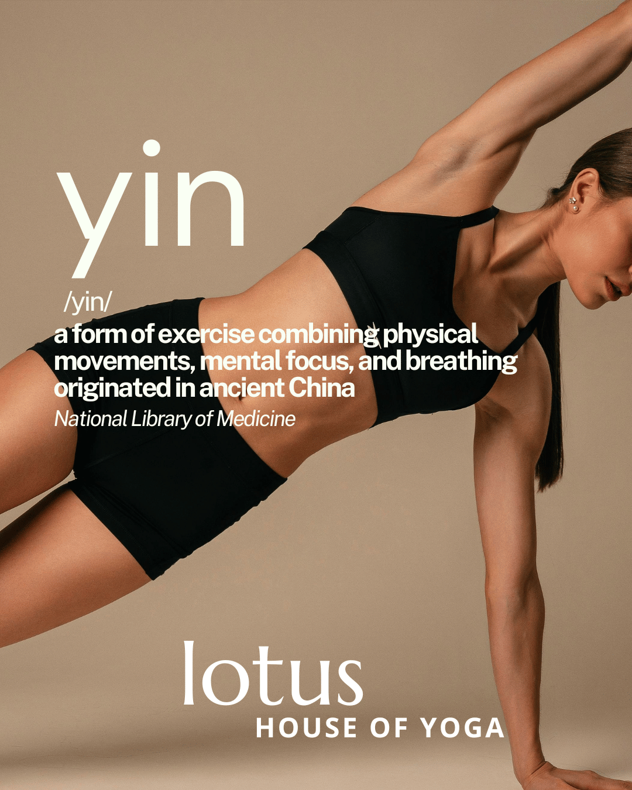
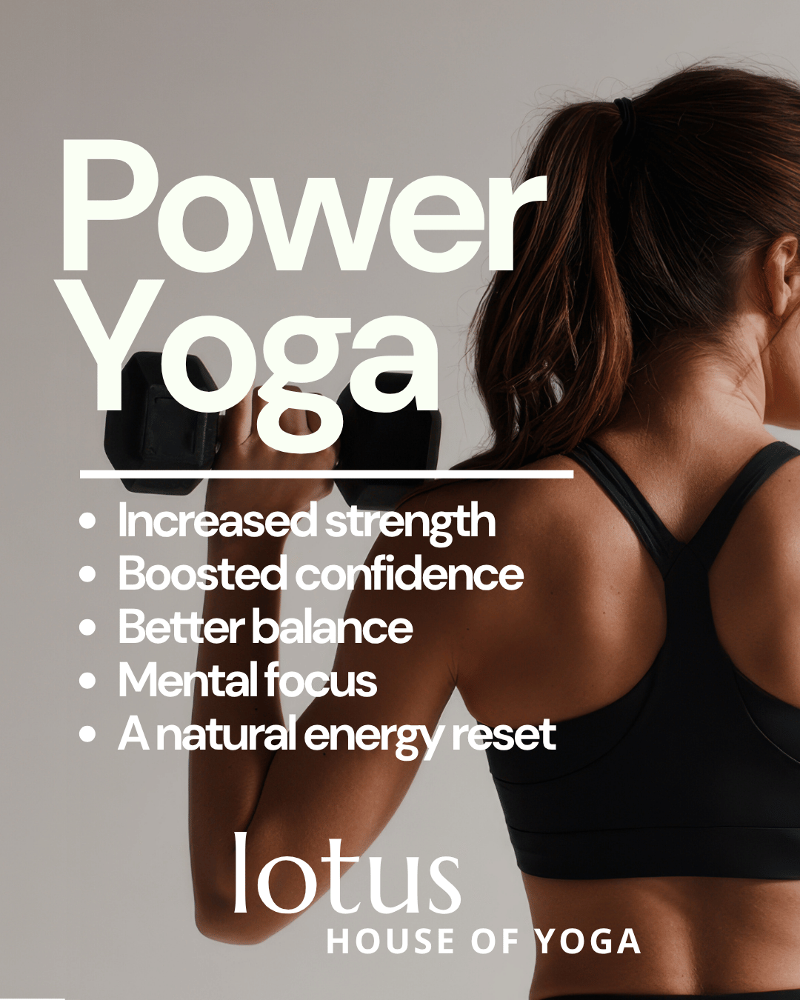
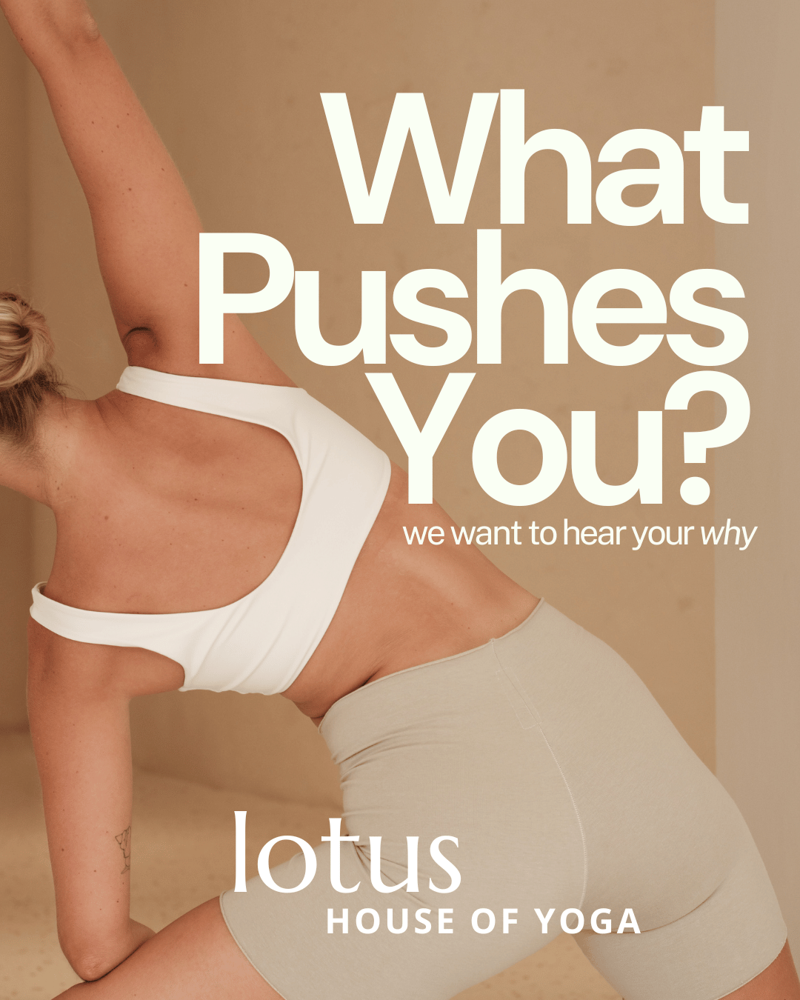
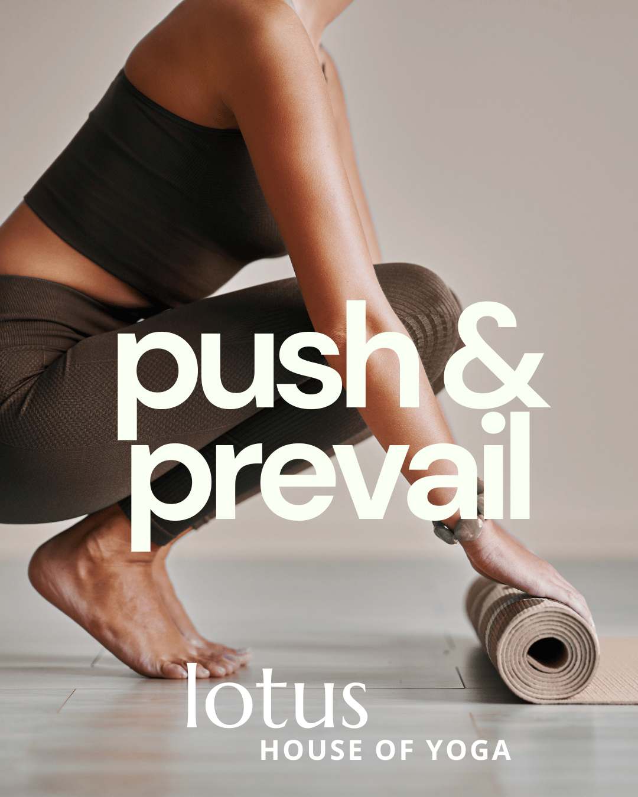
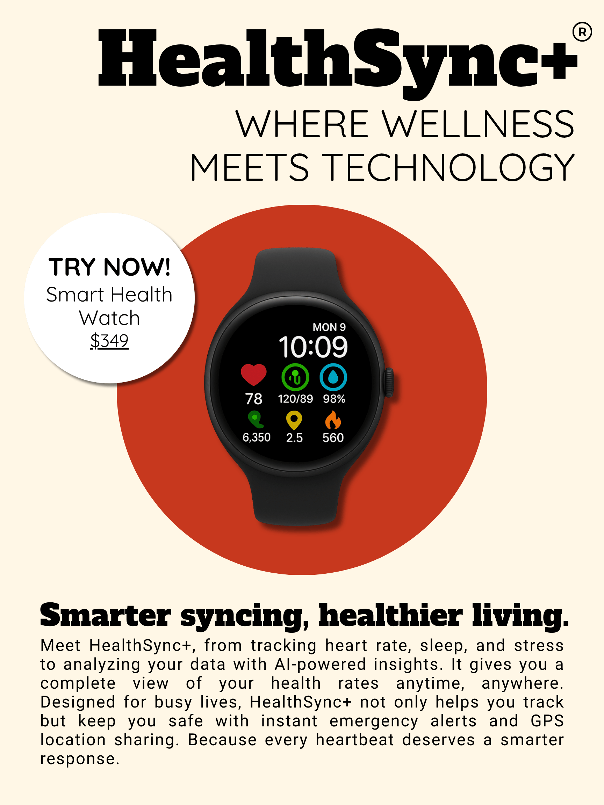
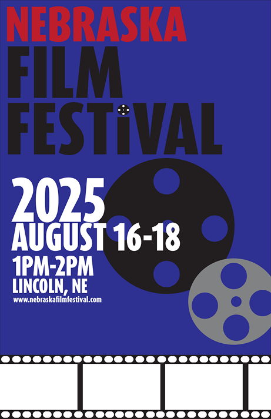

These Instagram post for Lotus House of Yoga use light, neutral imagery to create a soft and calming visual experience. The muted tones reflect a sense of balance and mindfulness, aligning with the overall feeling of the brand. A simple, clean font is used to keep the design minimal and easy to read
Read More
⌄
This poster ad for HealthSync+ is designed with a minimal color palette to create a clean, modern look that reflects the brand’s focus on simplicity and innovation. The limited use of color helps direct attention to the new product and concise text is used to capture interest and clearly communicate the value of the product.
This print ad for the Nebraska Film Festival uses simple visual elements, such as a film reel and film tape, to clearly communicate the theme without unnecessary complexity. These recognizable icons connect to the idea of film and storytelling, making the purpose of the ad easy to understand. The design features minimal color to maintain a clean and cohesive look, allowing the visuals and message to stand out without distraction.
